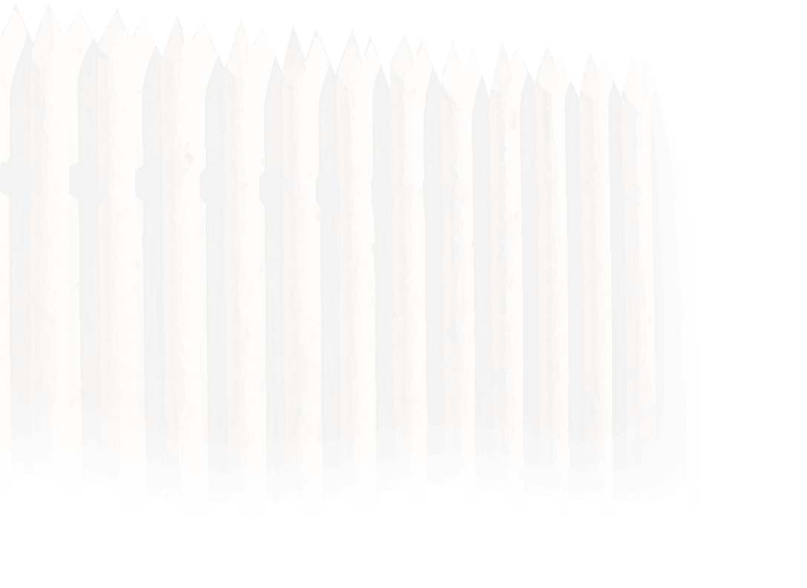

Предводитель племени Ватка, Донды батыр, по преданиям возглавивший продвижение с реки Вятки на реку Чепцу и обосновавший столицу чепецких удмуртов на горе Солдырь. Вследствие раздела с сыновьями переселился на основанный им Дондыкар.
×
Дондыкарское городище - городище северных удмуртов IX XIII в.в. археологический памятник, объект культурного наследия республиканского значения. Расположено в 1 км. к северо-востоку от современной деревни Дондыкар Глазовского района в верховьях р. Дондыкарка, правом притоке р. Пызеп. (С удмуртского языка Дондыкар - город богатыря Донды). Занимает мыс высотой около 10 м, укреплено небольшим валом. Площадь 22 тыс. кв.м. Городище исследовалось в ходе раскопок 1926 - 1939 годы под руководством А. П. Смирнова. Были вскрыты 19 жилищ, мастерские, сараи, очаги, собран богатый вещевой материал, характерный для Чепецкой культуры. Исследовано частично. В начале первого тысячелетия до н.э. на территории Удмуртии появляется новый тип поселений городища. Возводили их на высоких берегах рек, на мысах, отделённых крутыми обрывами. С напольной (около поля) стороны, на месте соединения мыса с берегом, городища укреплялись высоким валом и рвом, а позднее и 2-3 валами. Дондыкарское городище, хотя и значительное по площади, но имело только один небольшой вал. Система укреплений городища состояла из вала высотой 4,30 м, шириной основания 5 м и частоколом из брёвен диаметром 0,25-0,30 см. Вал был насыпан из плотно утрамбованной глины, с внутренней стороны облицован деревянной стеной из горизонтально уложенных брёвен, закрепленных вертикальными столбами. По раскопкам на городище были реконструированы жилища, представлявшие собой срубные постройки прямоугольной формы. Длинной стороной они были ориентированы по линии север - юг. Постройки устанавливались прямо на грунт, без фундамента. Сруб был невысоким, 7-11 венцов. Потолка не было, поэтому внутри дом не казался слишком низким. Пол был дощатым. В центре устраивалось основание под очаг из плотно утрамбованной сухой глины. Чтобы глина не рассыпалась, её заключали в деревянную раму. Дым выходил через отверстие в крыше. Крыша могла быть одно-двускатной. Устраивались нары, которые занимали половину дома (в длину), а в ширину достигали 1,8-2 м. В жилище имелась хозяйственная яма. Ведущую роль в жизни поселения играли охота, земледелие и животноводство. О том, что для древних жителей городища большое значение имела охота, свидетельствуют результаты специального изучения состава костей животных, найденных на городище. Обнаруженные при раскопках образцы зерен представляли собой смесь из разных культур. Учёные-биологи полагают, что в средние века земледельцы не считали нужным возделывать их раздельно, так как многокомпонентный состав зерна гарантировал устойчивый урожай при любых погодных условиях. Это не мешало его использованию при приготовлении каш и пресных лепёшек. Пашенное земледелие неразрывно связано с животноводством. Для пахоты необходима тягловая сила, а для повышения урожайности - навоз, который можно получить при стойловом содержании скота. Обнаружены остатки срубов со слоем навоза и загоны для скота. На Дондыкарском городище найдены орудия, которыми вполне можно было пользоваться при дроблении руды. Обнаружены кузницы, располагавшиеся у вала. Кузница представляла собой срубное сооружение прямоугольной формы, размерами 9,8 х 7,5 м. В центре располагался очаг, рядом - яма для закаливания или томления изделий из чёрного металла, а также меха для подачи воздуха в горн. Среди изделий кузнечных мастеров найдены земледельческие орудия, конское снаряжение, оружие и многие другие предметы, необходимые в повседневной жизни. Теперь от этого городища осталась только поляна (Карйыл), пересечённая неглубокими рвами, давно заросшими луговой травой, да легенда, которая повествует нам о происхождении этого места. Городище несколько раз исследовали археологи; были найдены уникальные вещественные источники. Сведения о городище Дондыкар можно найти в работах удмуртских исследователей. М.Г. Ивановой, Л.С. Христолюбовой, Т.Г. Перевозчикова, В.Ф. Генинга, в этнографических справочниках и пособиях. В 80-х годах XX века территория городища дважды была распахана, что нанесло большой урон историческому памятнику. Из книги: В краю Донды-батыра: достопримечательности Глазовского района: сборник краеведческих материалов / [сост. З. П. Перминова; Муниципальное учреждение культуры "Глазовская централизованная библиотечная система" муниципального образования "Глазовский район"]. - Глазов: ООО "Центр-сервис", 2014. - 68 с.: фото.
×
Давным-давно на гору Солдырь откуда-то пришел удмуртский батыр Донды, и остался тут жить. И было у него два сына - Идна и Гурья. На Солдыре у него родились еще несколько сыновей, среди них Весья и Зуй. Все батыры отличались сказочной силой. Там, где не было подходящего места для крепости, они брались рукой за пригорок и вытягивали его кверху до величины горы, на которой и селились вместе с такими же батырами, как и они сами. У каждого из сыновей Донды было свое любимое занятие. А старик Донды занимался главным образом торговлей и промышленностью. После смерти бог превратил Донды в белого лебедя, и он до настоящего времени покровительствует всем удмуртам, которые о нём помнят. Так, удмуртский эпос с присущей всему народному творчеству глубокой красотой описывает возникновение на нашей земле поселений, ставших центрами развития культуры, ремесла, торговли. Образ белого лебедя нашёл отражение на гербе Удмуртской Республики. Имена былинных удмуртских богатырей продолжают жить в названиях ряда деревень на реке Чепце Иднакар, Дондыкар, Весьякар, Зуйкар, Донды, Утэм, Зуйыр, Чибинь, Эбга. Из сохранившихся археологических памятников, связанных с батырами, в настоящее время в Глазовском районе выделяют 8 городищ. Среди них самые известные Иднакар и Дондыкар, датирующиеся IX-XIII веками.